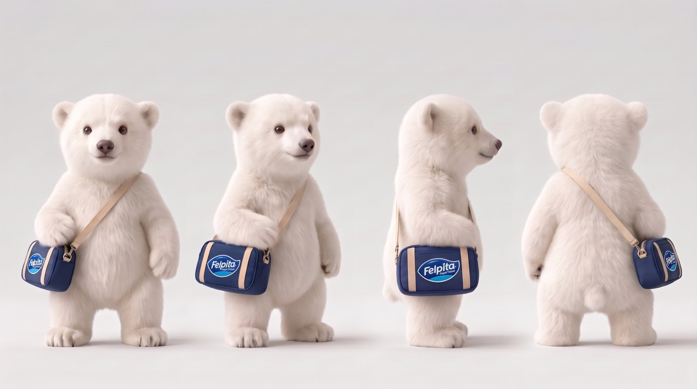
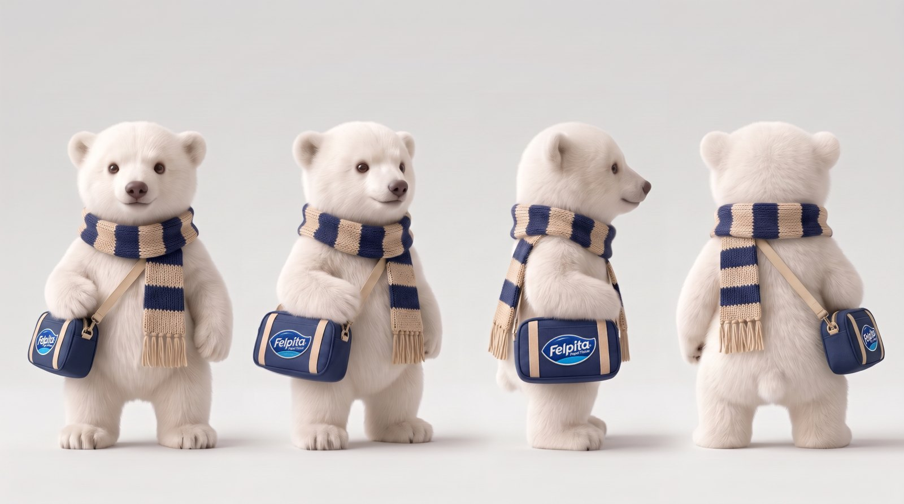
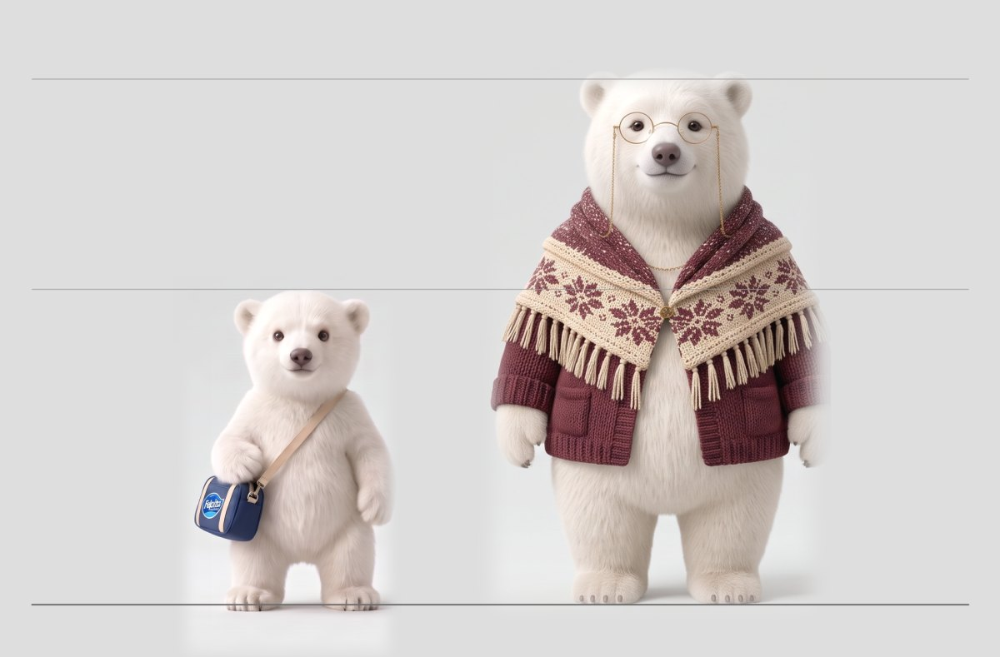

El mismo osito en cada plano
Todo parte del Felpita Bear System: cabeza grande, hocico corto, ojos chicos y oscuros, pies grandes, 60 cm de alto. Estas fichas fijan al personaje para que no cambie de un plano a otro.


Sin bufanda: en casa, en la Argentina de verano y adentro de lo de la abuela.


